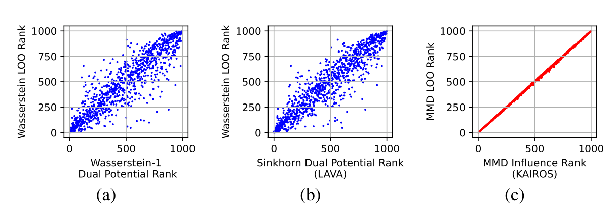
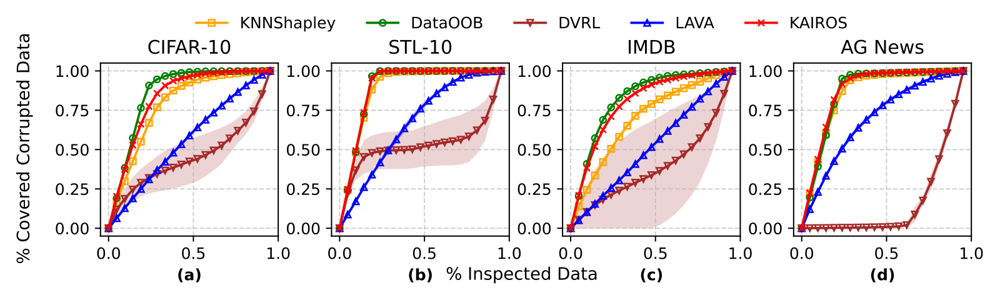
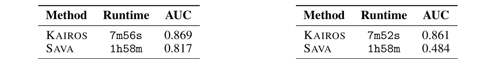
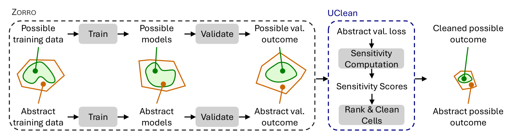
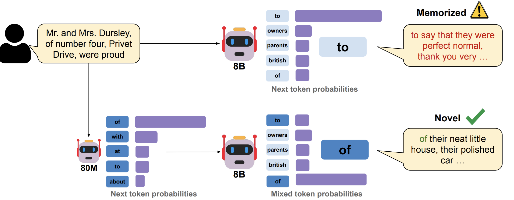
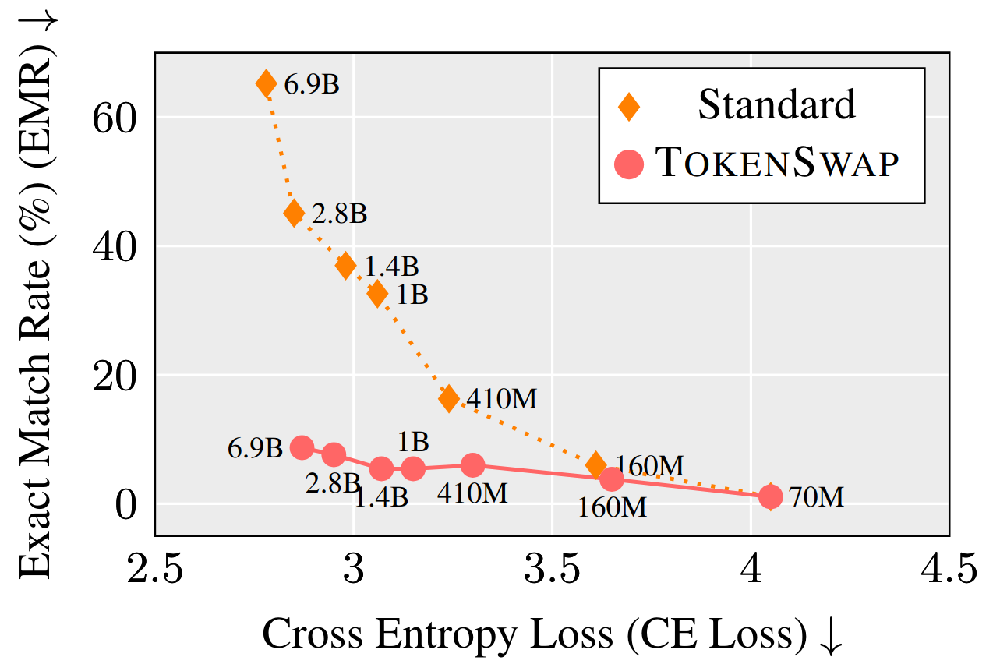
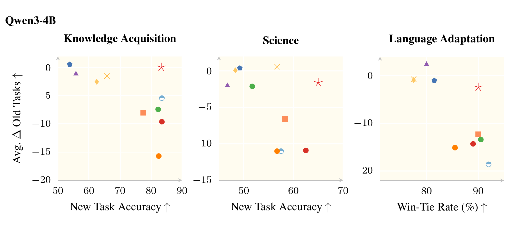

Data valuation and responsible AI
- Which data should we inspect, acquire, retain, or reward?
- Valuable for which outcome—and for whom?
Why this matters for modern model training
- Data selection changes which examples update a model’s weights.
- Recent instruction-tuning experiments find that the task, representation and budget all matter.
- A useful ranking must improve a specified decision.
What you will be able to explain
- Specify a valuation objective and its evaluation population.
- Calculate removal value, local influence and coalition credit—and explain their differences.
- Choose and test a responsible data intervention.
Begin with the valuation contract
- Players: records, documents, people or entire sources.
- Training procedure: model, initialization, optimizer and randomness.
- Utility: measured outcome, evaluation population and baseline.
Utility connects a subset to an outcome
S: training subset · A: fixed training procedure · E: evaluation population · U: higher is better
- Train on subset S, then evaluate the resulting model.
- Keep the evaluation rule fixed when comparing subsets.
- Reserve final testing from adaptive selection.
Value is one question among several
- Value asks about contribution to a specified objective.
- Quality asks whether data are accurate, suitable and well documented.
- Consent, privacy, fairness and compensation require additional judgments.
Three different contribution questions
- Removal: what changes if this player leaves the full dataset?
- Influence: what changes under a tiny reweighting near a fitted solution?
- Shapley: what does this player add to different subsets of players (coalitions)?
Leave-one-out holds the other players fixed
D: full dataset · i: one player · U: fixed higher-is-better utility
- Compare full-data utility with utility after removing player i.
- Positive value means removal hurts the chosen utility.
- One background coalition can hide redundancy.
Illustration: three neighbors, one query
| Player | Distance to query | Label |
|---|---|---|
| A | 1 | 1 |
| B | 2 | 0 |
| C | 3 | 1 |
- Predict the label of one query whose true label is 1.
- Use the closest available neighbor; the empty set has utility 0.
- Utility is 1 for a correct prediction and 0 otherwise.
Compute utility for each coalition
| S | ∅ | A | B | C | AB | AC | BC | ABC |
|---|---|---|---|---|---|---|---|---|
| U(S) | 0 | 1 | 0 | 1 | 1 | 1 | 0 | 1 |
- A wins whenever it is present; otherwise B beats C.
- AB and AC predict 1; BC predicts 0.
- These eight utilities define the entire game.
Try it: who matters to the full dataset?
| S | ∅ | A | B | C | AB | AC | BC | ABC |
|---|---|---|---|---|---|---|---|---|
| U(S) | 0 | 1 | 0 | 1 | 1 | 1 | 0 | 1 |
- Full-data utility is U(ABC) = 1.
- What are the removal values of A, B and C?
- Does a zero removal value mean an example is useless?
Worked feedback: removal sees one context
- A: 1 − U(BC) = 1. B: 1 − U(AC) = 0. C: 1 − U(AB) = 0.
- C is redundant beside A, yet useful when A is absent.
- Leave-one-out is an intervention at the full dataset.
Replace repeated refitting with a local question
- Fit parameters θ by minimizing average training loss.
- Add a small weight ε to one example’s loss.
- Estimate how a query loss changes near the fitted solution.
Influence combines gradients and curvature
gᵢ: training-loss gradient · gq: query-loss gradient · H: training-risk Hessian at fitted θ · ℓq: query loss · ε: additive weight · T: transpose
- The training gradient tells us how this example pushes the fitted weights.
- The inverse Hessian accounts for local curvature.
- With a differentiable stable fit and invertible Hessian, positive query-loss influence means harmful upweighting.
Illustration: a model that predicts one constant
θ: constant prediction · R: average training loss · query target yq = 2
- Training targets are 0, 1 and 2; predict the same number θ for every input.
- Squared loss is one half of the prediction error squared.
- The fitted mean is θ = 1; the query target is 2.
Work through the local derivative
Perturbed objective: R(θ) + ε · ½(θ − 0)²
- At θ = 1, the target-0 training gradient is +1 and the query gradient is −1.
- The parameter derivative is −1; the query-loss derivative is +1.
- Upweighting target 0 hurts this target-2 query locally.
A derivative is not exact retraining
- Deleting target 0 corresponds to ε = −1/3 in this objective.
- First-order θ change: +1/3. Exact refitting change: +1/2.
- First-order query-loss change: −1/3. Exact change: −3/8.
Try changing whose outcome matters
Given θ = 1, H = 1, gᵢ = +1; new query target yq = 0
- Return to the full-data fit θ = 1; keep H = 1 and the target-0 gradient +1.
- Change the query target from 2 to 0.
- What happens to the sign of target-0 influence?
Feedback: value changes with the query
- The query gradient is now +1, so the loss derivative is −1.
- Upweighting target 0 helps the target-0 query locally.
- The record did not change; the evaluation target did.
Does predicted influence track actual change?
Koh & Liang · ICML 2017

- MNIST: compare predicted and actual removal effects for one wrongly classified query.
- Agreement in these models supports a local approximation—not universal fidelity.
A different question: credit across contexts
- A player can help before a redundant substitute arrives.
- Shapley averages that player’s marginal utility across coalitions.
- The training procedure and utility still define the game.
The marginal contribution depends on its predecessors
π: uniformly random player order · Pᵢπ: players before i · φᵢ: Shapley credit
- In one random order, let Pᵢ be the players before i.
- Credit is U(Pᵢ ∪ {i}) − U(Pᵢ).
- Average this quantity over all arrival orders.
Trace the order B → C → A
Query label 1 · A(distance 1,label 1), B(2,0), C(3,1) · nearest neighbor predicts · U(∅) = 0
- B arrives: U(B) − U(∅) = 0.
- C arrives: U(BC) − U(B) = 0.
- A arrives: U(ABC) − U(BC) = 1.
Try it: average all six arrival orders
| Order | ΔA | ΔB | ΔC |
|---|---|---|---|
| ABC | 1 | 0 | 0 |
| ACB | 1 | 0 | 0 |
| BAC | 1 | 0 | 0 |
| BCA | 1 | 0 | 0 |
| CAB | 0 | 0 | 1 |
| CBA | 1 | −1 | 1 |
- Each row gives marginal contributions in A, B, C order.
- Average each player’s column to obtain its Shapley credit.
- Compare the answer with removal values (1, 0, 0).
Feedback: coalition credit reveals the redundancy
| Order | ΔA | ΔB | ΔC |
|---|---|---|---|
| ABC | 1 | 0 | 0 |
| ACB | 1 | 0 | 0 |
| BAC | 1 | 0 | 0 |
| BCA | 1 | 0 | 0 |
| CAB | 0 | 0 | 1 |
| CBA | 1 | −1 | 1 |
- Shapley credit is A = 5/6, B = −1/6, C = 1/3.
- C gets credit for useful early-arrival contexts.
- B hurts this query in one order without being mislabeled.
Can low-value rankings help a label audit?
Ghorbani & Zou · ICML 2019

- Inspect training labels in the order suggested by each method.
- The curve measures recovered corruption versus the fraction checked.
- This supports prioritizing an audit, followed by verification.
Coalition averaging creates a computational problem
- Exact Shapley can require utilities for exponentially many subsets.
- Sampling arrival orders estimates the average marginal contribution.
- Truncation and approximations trade computation for error.
A special learner can make exact credit easier
Jia et al. · PVLDB 2019
- KNN-Shapley exploits the ordered neighbors of each evaluation query.
- Exact O(n log n) computation is available for its specified K-nearest-neighbor utility.
- This is not an exact algorithm for arbitrary neural-model Shapley.
Try it: whose evaluation population counts?
M, R: two domains · A/B: duplicate M coverage · C: R coverage · illustrative utility · 1{condition} = 1 if true, 0 otherwise
- A and B each cover domain M; C covers domain R.
- Utility gives 80% weight to M coverage and 20% to R coverage.
- How should the two duplicate M contributors share credit?
Feedback: change the objective, change the values
- With 80/20 domain weights, Shapley credit is (0.4, 0.4, 0.2).
- With 50/50 domain weights, it becomes (0.25, 0.25, 0.5).
- The allocation inherits the evaluation population.
Player identity also changes the allocation
- Suppose A’s owner submits an identical extra player A′.
- Three M players now share 0.8; A’s owner receives 8/15 in total.
- Record-level symmetry does not guarantee owner-level fairness.
Can we value data before choosing a downstream learner?
Zhu, Prashant, Cloninger & Salimi · NeurIPS 2025
- Model-based values depend on a training procedure and outcome.
- A trusted reference can define a data-level target instead.
- KAIROS measures contribution to a distributional discrepancy.
Use a reference distribution as the target
- Keep the trusted reference P fixed while changing the pool Q.
- Lower discrepancy d(P, Q) is the chosen data-level goal.
- A biased reference can reward the wrong population.
Background: compare examples through a kernel
k: positive-semidefinite kernel · φ: feature map · μP: reference mean feature
- A kernel k(x, y) measures similarity through a feature representation.
- An average feature vector represents a dataset.
- Maximum mean discrepancy (MMD) compares the reference and pool averages.
Compute discrepancy from pairwise similarities
MMD: maximum mean discrepancy · each expectation averages its indicated pairwise similarities
- Within-reference and within-pool similarity are balanced against cross-similarity.
- The kernel and its bandwidth remain fixed during this comparison.
- The computation does not retrain a downstream predictor.
Removal value for a discrepancy objective
P: fixed reference · Q−i: equally weighted pool after removing i · positive: helping the discrepancy goal
- Use utility U(Q) = −d(P, Q), because lower discrepancy is better.
- Removing a helpful point increases discrepancy and gives positive value.
- This is a different utility from test accuracy.
Distribution influence uses a normalized path
δx: point mass at x · n > 1: pool size · derivative is local, deletion is finite
- Mix a little more mass onto x while renormalizing the pool.
- Helpful influence is minus the derivative of discrepancy.
- For n equally weighted points, removal uses ε = −1/(n − 1).
Separate the exact derivative from a ranking score
r: simplified ranking score · I d: helpful derivative · assumes MMD(P,Q) > 0 and fixed kernel
- The kernel score r(x) is reference similarity minus pool similarity.
- Centering and scaling recover the MMD derivative when MMD is nonzero.
- Dropping shared constants preserves ranks, not exact numerical influence.
Illustration: a linear-kernel reference match
- Use scalar features, k(x, y) = xy, reference P = {1}, and pool Q = {0, 1}.
- The mean gap is 1 − 0.5 = 0.5; ranking scores are r(0) = 0 and r(1) = 0.5.
- Centered derivative scores are −0.5 and +0.5.
Does local ranking match finite removal?
KAIROS · NeurIPS 2025

- Each point compares its score rank with its actual discrepancy-removal rank.
- The reported top-100 overlap is 99% for KAIROS and 60% for LAVA here.
- This checks ranking fidelity for the specified discrepancy experiment.
Does the ranking find corrupted data early?
KAIROS · NeurIPS 2025

- The horizontal axis is the fraction inspected; the vertical axis is corruption recovered.
- Injected corruption supplies the evaluation labels for this experiment.
- A low score prioritizes investigation; it does not prove maliciousness.
What work does the reported speed exclude?
ImageNet · feature noise (left), label noise (right) · ResNet-50 features · A100

- All marginal kernel scores use O(n² + nm) kernel evaluations.
- Cached kernel sums also make exact MMD removal efficient.
- AUC: area under corruption-recovery versus inspection-fraction curve; higher is better.
The reference and representation define usefulness
- Feature similarity alone can miss label corruption.
- Conditional comparisons add label information and auxiliary estimation.
- Discrepancy bounds need assumptions; intervention quality needs testing.
From ranking records to choosing repairs
UClean · user-supplied manuscript material · local draft

- A limited cleaning budget forces us to choose which uncertain cells to verify.
- UClean propagates cell uncertainty through training to validation loss.
- Query a trusted source for selected cells; do not invent values to fit labels.
Test a cleaning policy under a real budget
- Compare downstream test quality at the same number of verified repairs.
- Keep oracle repair and automatic full-data cleaners distinct.
- Include ranking cost, verification cost and group outcomes.
Transfer exercise: audit a new hospital dataset
- You can verify 100 records; a rare hospital contributes 5% of the pool.
- The reference set contains only large hospitals, and the lowest scores come from the rare hospital.
- Would you delete those records, inspect them, or revise the valuation setup?
Feedback: investigate the mismatch before deletion
- Check whether the reference represents the intended hospitals.
- Use part of the verification budget to distinguish valid rarity from errors.
- Validate the intervention on reserved overall and hospital-specific outcomes.
For LLMs, first identify the training stage
- Pretraining learns from broad token sequences.
- Instruction tuning adapts weights using instruction–response examples.
- Retrieved context is an inference input; it need not update weights.
Attribution: which training data affected this behavior?
Grosse et al. · technical report · 2023
- Grosse and colleagues study training-example influence on language-model behavior.
- Query prefix and completion + candidate training sequences → gradients and approximate curvature.
- The output ranks local sensitivity of the specified completion loss.
Read the validation target carefully
Grosse et al. · 2023 technical report

- The plotted target is proximal Bregman response, not exact leave-one-out retraining.
- Bars show Pearson correlation with PBRF; the language-model panel uses 810M parameters.
- A proximity-penalized response is useful when ordinary refitting is unstable.
A plausible document is not yet an intervention test
- Inspect what the score predicts: a loss change, a response change or a similarity.
- Check whether the proposed data intervention realizes that prediction.
- Keep attribution separate from memorization and entitlement.
Selection: which instructions should we train on next?
Xia, Malladi et al. · ICML 2024
- A broad instruction pool may contain many examples irrelevant to a target capability.
- LESS selects examples using target-validation gradient similarity.
- The selected subset is then used in a separate fine-tuning run.
LESS builds reusable gradient features
- Warm up a low-rank adapter on a small sample of the pool.
- Project optimizer-aware training gradients and target-validation gradients.
- Rank candidate examples by their similarity, then train on the selected subset.
Illustration: compare two update directions
η > 0: small learning rate · g: gradient · illustrative plain-gradient step, not the complete LESS estimator
- Let the target-loss gradient be (1, 0).
- Candidate gradients (1, 0) and (0, 1) have cosine similarities 1 and 0.
- A small negative-gradient step from the aligned candidate reduces target loss to first order.
Selection data are not the final test
- Target-validation examples guide which training examples are selected.
- The final test evaluates the model after selected-subset training.
- Compare equal budgets and count warmup, scoring and training costs.
Five percent can help—but not on every task
LESS · ICML 2024

- For Llama-2-7B, LESS at 5% gets 50.2% MMLU accuracy versus 51.6% for full data.
- TyDiQA gold-passage macro F1 is 56.2 versus 54.0 on a 0–100 scale.
- Parentheses report standard deviation across 3 training seeds.
Disentangle representation from selection
Nayak et al. · ICML 2026
- A scorer and a subset-selection algorithm are different components.
- Nayak and colleagues compare representations under controlled selection rules.
- They vary target tasks, candidate pools and budgets.
A proxy result: loss on the query set
A Critical Look at Targeted Instruction Selection · ICML 2026

- Compare query loss across budgets while holding the selection rule fixed.
- Gradient representations provide a useful query-loss signal in these settings.
- Query loss is not the same outcome as held-out task performance.
The final task result depends on the budget
Nayak et al. · ICML 2026

- Compare held-out performance; shaded bands are standard errors across 3 seeds.
- Gradient-based choices often help at low budgets; gains shrink at larger budgets.
- No single method dominates all tested settings.
Choose the question before choosing the score
- Remove a player: use the full-data intervention or a validated approximation.
- Allocate coalition credit: specify the game and estimate Shapley carefully.
- Select future training data: test the chosen subset after training.
Transfer exercise: adapt an assistant responsibly
- You have a pretrained model, 100,000 candidate instructions and a 5,000-example training budget.
- The target population includes common requests and a rare safety-critical group.
- Design the selection, comparison and evaluation before choosing a method.
Feedback: make the intervention testable
- Use target-development data for selection and keep a separate final test.
- Compare selected data with random selection, the base model and feasible full-data training.
- Report overall and group outcomes, cost and uncertainty.
Valuable for the decision we can defend
- Define the contribution, objective, population and baseline.
- Use the score whose question matches the intended intervention.
- Validate the action—and account for people beyond the aggregate metric.
Optional: uncertainty about data is a different problem
- ZORRO asks how plausible cell values change the trained model.
- Possible worlds represent alternative repaired datasets.
- A compact symbolic model preserves shared uncertainty across predictions.
Optional: preserve dependence across possible models
- One unresolved cell can affect several fitted coefficients together.
- Independent coefficient intervals can lose that dependence.
- Preserving shared variables can produce more informative model bounds.
Optional: repair assumptions determine the claim
- An oracle that supplies true values differs from an automatic cleaner.
- Candidate repair sets must contain the truth for coverage claims to apply.
- Sensitivity-based prioritization is a heuristic under a cleaning budget.
Optional: memorization is not data value
- Memorization tests whether training text can be reproduced under a specified protocol.
- TokenSwap changes next-token probabilities during generation; model weights stay fixed.
- The goal is less verbatim copying with small measured utility costs.
Optional: where TokenSwap intervenes
TokenSwap · original source-deck method artwork

- Both models read the same prefix and produce next-token probabilities.
- Keep the main model’s total function-word mass; redistribute it using the helper.
- Sample the next token and repeat, without updating either model.
Optional: retain the experiment’s denominator

- Pythia-6.9B with a Pythia-70M helper: exact-match rate falls from 65.22% to 8.70%.
- That is an 86.66% relative reduction in the specified extraction test.
- Cross-entropy changes from 2.77 to 2.87 in that comparison.
Optional: retain old capabilities while adapting
FINCH · source-deck preprint material · 2026

- FINCH adapts learning rates to the current loss during fine-tuning.
- Red star: FINCH. Right means better adaptation; up means better retention.
- Retention of one metric does not certify calibration or safety.
Optional: diverse skills can be inference-time prompts
- DivSkill explores complementary text-to-SQL strategies.
- A skill is a strategy prompt; these steps do not update model weights.
- Coverage of different failures motivates complementary candidates.
Optional mathematical background is preserved
- The source archive retains the RKHS and MMD derivation sequence.
- Its normalized removal path differs from additive training-loss upweighting.
- Use the qualified derivative and restore constants before interpreting signs.